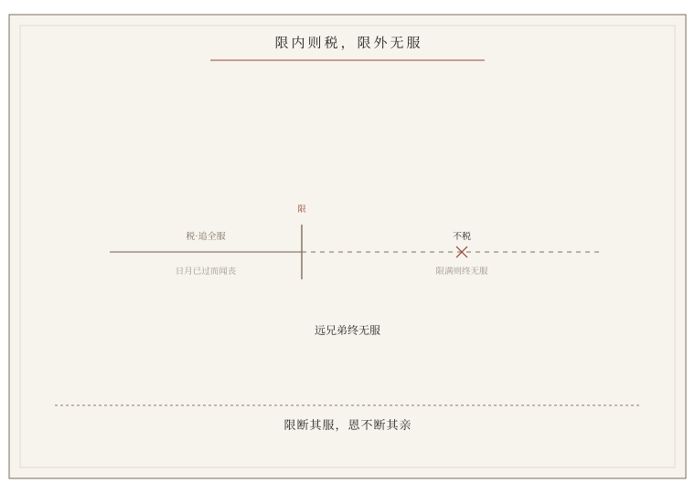

檀弓上 · 三·三十六 · 第 239 课
曾子曰：「小功不税，则是远兄弟终无服也，而可乎？」注「据礼而言也」「以己恩怪之」。疏「曾子仁厚，礼虽如此，犹以为薄，故怪之」。
说什么事：一个人先承认礼如此，然后问一句「然而可以吗」。
落在哪一层：礼，兼及礼数与恩情。
为何编在此位：上节论「中」，此节举礼之不及人情处。知礼之不及而不改礼，是为仁者之问。
【经】曾子曰：「小功不稅，則是遠兄弟終無服也，而可乎？」
【注】据礼而言也。日月已过，乃闻丧而服曰税，大功以上然，小功轻，不服。言相离远者，闻之恒晚。以己恩怪之。
【疏】此一节论曾子怪于礼小功不著税服之事。曾子以为依礼小功之丧，日月已过，不更税而追服，则是远处兄弟闻丧恒晚，终无服而可乎？言其不可也。曾子仁厚，礼虽如此，犹以为薄，故怪之。此据正服小功也。故《丧服小记》云「降而在缌小功者则税之」，其余则否。郑康成义，若限内闻丧，则追全服；若王肃义，限内闻丧但服残日，若限满即止。假令如王肃之义，限内只少一日乃始闻丧，若其成服，服未得成即除也；若其不服，又何名追服？进退无礼，王义非也。
小功 五服之第四，服五月。
税 日月已过乃闻丧而追服。注「大功以上然，小功轻，不服」。
远兄弟 居远之兄弟。疏「言相离远者，闻之恒晚」。
终无服 终竟无服可服。
而可乎 然而可以吗。问句，非断句。
降而在缌小功者则税之 本服重而降在缌、小功者，仍追服。
曾子说：「小功之丧不追服，那么住得远的兄弟就终于无服了，这样可以吗？」
此节一断一问。注先说「据礼而言也」——曾子不是不知礼，他先把礼摆出来，然后问「而可乎」。这三个字是全节的分水：礼如此，然而可以吗。疏断之曰「曾子仁厚，礼虽如此，犹以为薄，故怪之」——怪者，不是要改，是不肯安。礼有日月之限，恩无远近之别；限以断之，恩以牵之，两者在此相争，而曾子把争处说了出来。
第一层 税之名义 注「日月已过，乃闻丧而服曰税」。税者追也。大功以上，日月虽过犹追；小功轻，则不复追。所以别者，恩之厚薄本不同，追与不追即以此为断。
第二层 限内限外 郑康成曰：限内闻丧，追全服。王肃曰：限内闻丧，但服残日，限满即止。疏驳王义，其言最硬：若限内只少一日乃闻丧，成服未得成而即除，若其不服，又何名追服——「进退无礼」。此见礼家之辨不在门户，在名实：一名之下若无其实，则其名不可立。
第三层 降服则税 《丧服小记》「降而在缌小功者则税之」。本服本重，因故而降在缌、小功者，仍追服。此一条最见礼之细：所不追者，恩本轻者；恩本重而文降者，不以此限。故曾子之问，礼家早已有其半答案。
第四层 问而不改 曾子问「而可乎」，非欲废税限。疏以「仁厚」二字归之，最得其实。礼所以立者众人，仁者所以不安者一人。一人之不安，不必改众人之礼；然礼之所以能久，正赖此不安者时时问之。
与今日何干 制度皆有截止之日，人情无截止之日。凡「过期不候」的规矩，都该有人替错过的人问一句「而可乎」。问者不必改制度，只使制度不至僵死。
| 左 | 右 |
|---|---|
| 小功不税 | 礼之文 |
| 远兄弟终无服 | 恩之伤 |
| 日月已过乃闻丧 | 闻之恒晚 |
| 大功以上然，小功不服 | 以恩厚薄为断 |
| 降而缌小功则税之 | 恩本重者不以此限 |
| 曾子：而可乎 | 仁者于礼之不安 |
| 郑：限内追全服 | 王：服残日（疏斥其非） |
画一处简素的堂前，视点略高。中央一领草席空地，一张矮几上摊着一卷未启的简。左边站着一位士人（老、衣素、手持简册），面转向右边一位更老的士人，右手抬起作问询之势，掌心向上；右边那位坐着，一手按膝，一手垂下，不作答。两人之间地上有一道浅浅的刻痕，横过席面。不写文字、不画人面细节。赭色只用在左边士人抬起的手腕处一窄带。
